Modulo 1 — L'IA nel contesto educativo
Inquadramento dei modelli generativi e dei loro principi di funzionamento. Primi casi d'uso didattici.
Obiettivi del modulo¶
- Riconoscere i principi base dei Large Language Model (LLM)
- Comprendere il concetto di prompt e di prompting strutturato
- Identificare i primi casi d'uso dell'IA generativa nella pratica didattica
- Acquisire un atteggiamento critico verso le allucinazioni e i limiti dei modelli
Ascoltare · Podcast¶
Podcast generato come «Audio Overview». Ideale per fruizione in mobilità.
Guardare · Slide¶
Presentazione del modulo. Usa le frecce per scorrere, clicca sull'immagine per ingrandire.
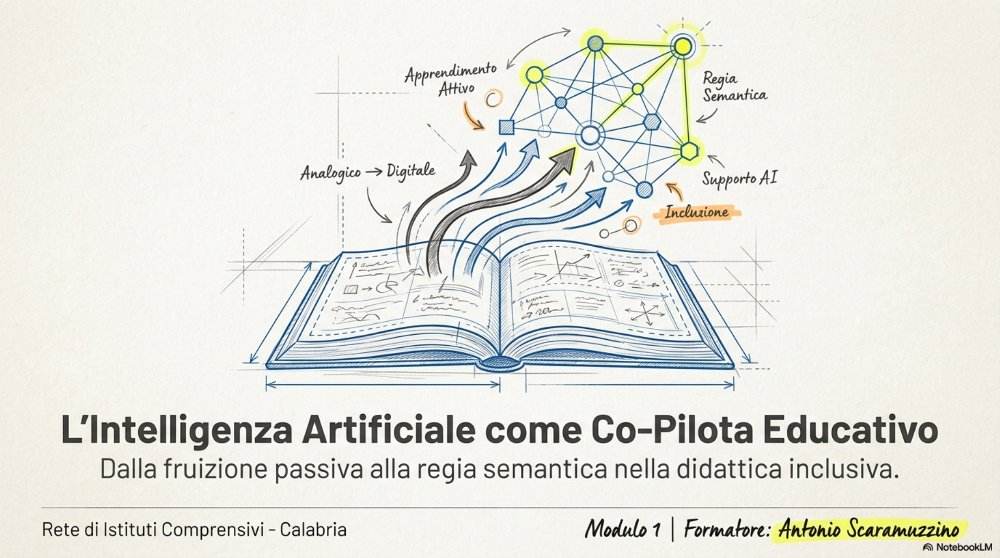
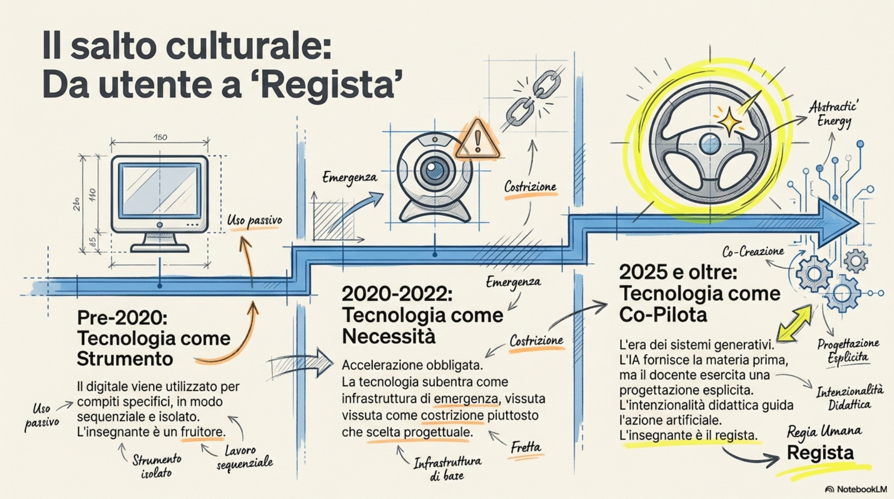
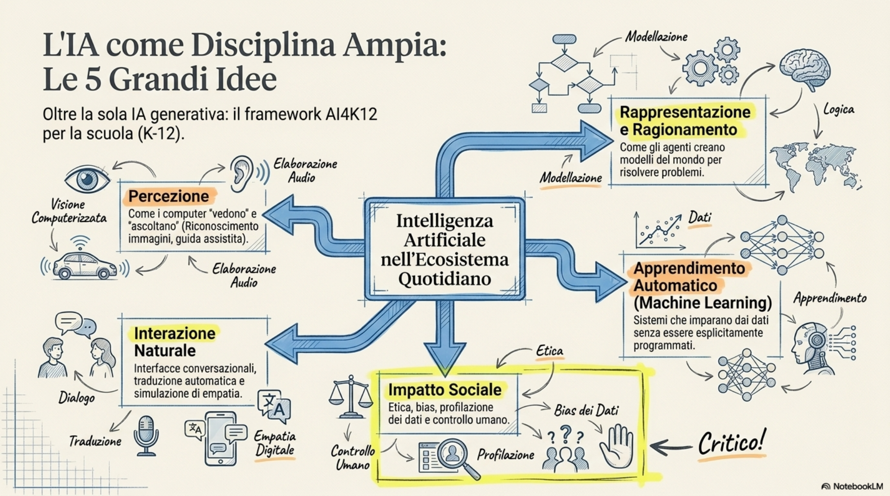
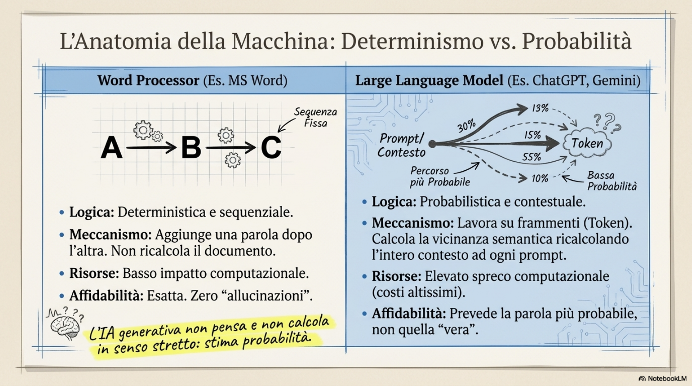

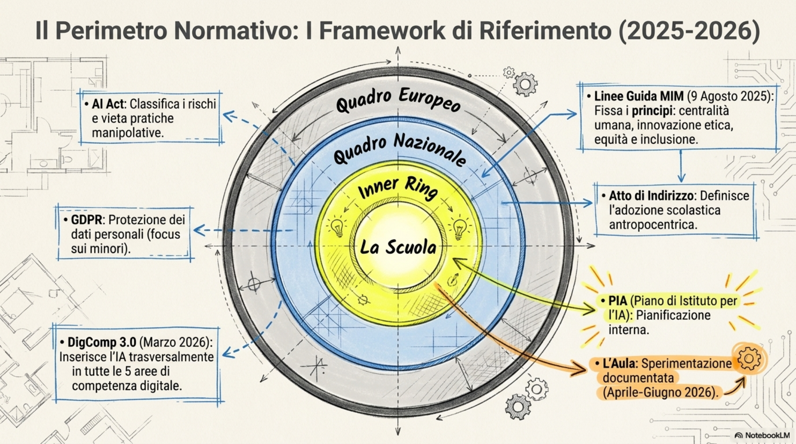
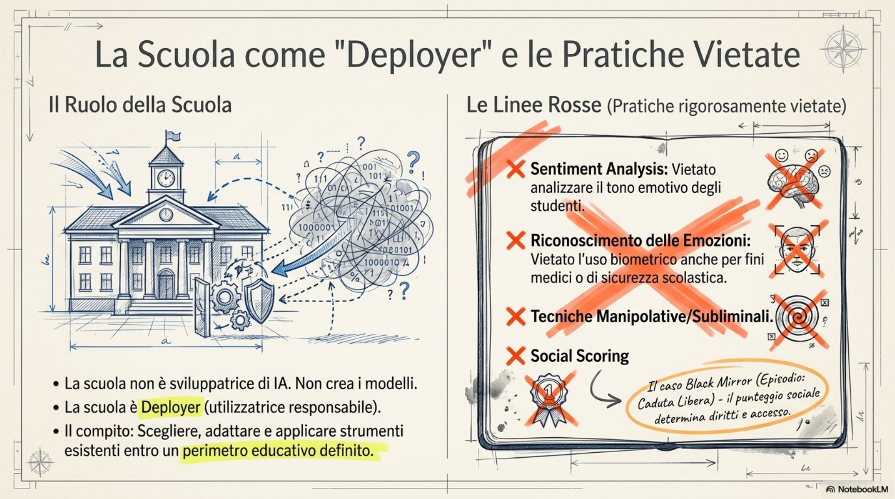
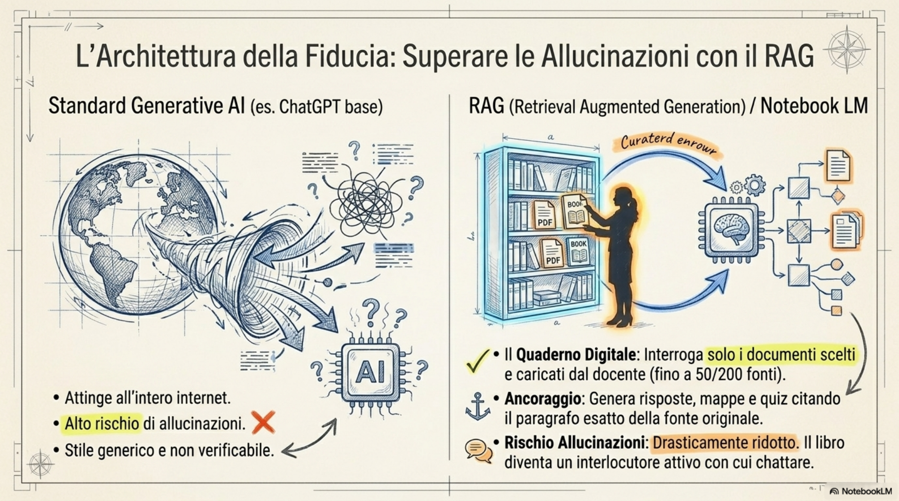
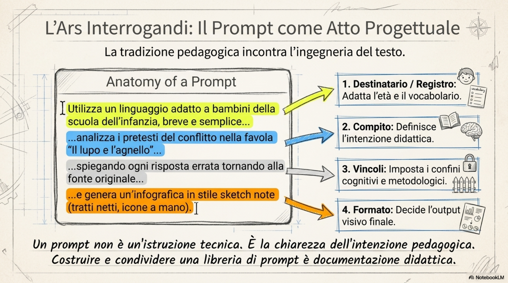
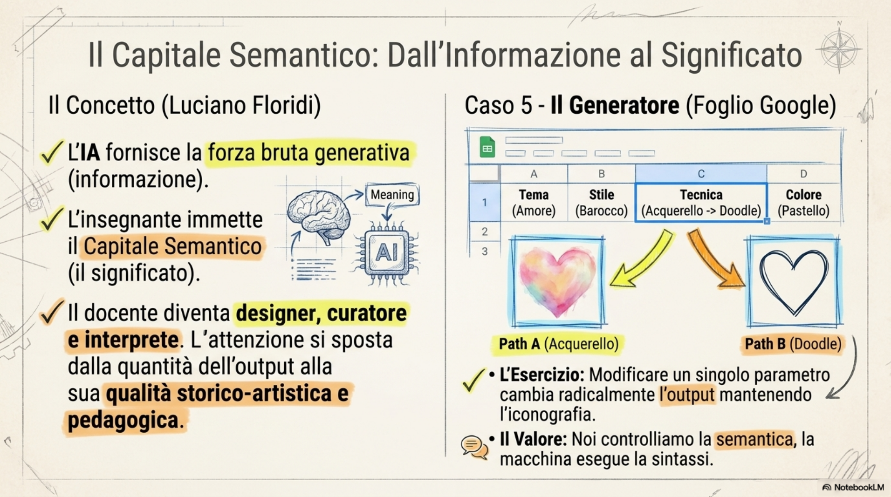
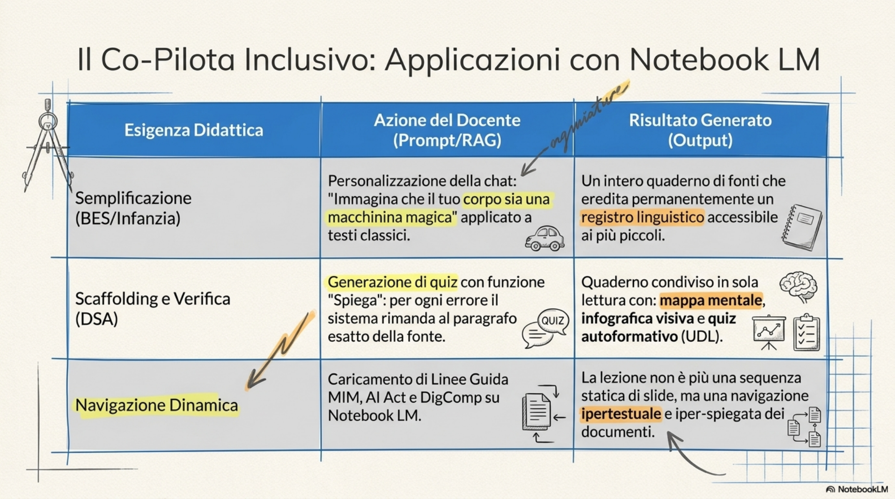
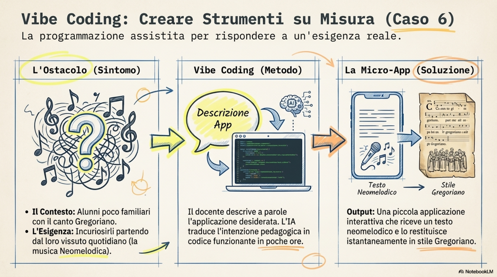
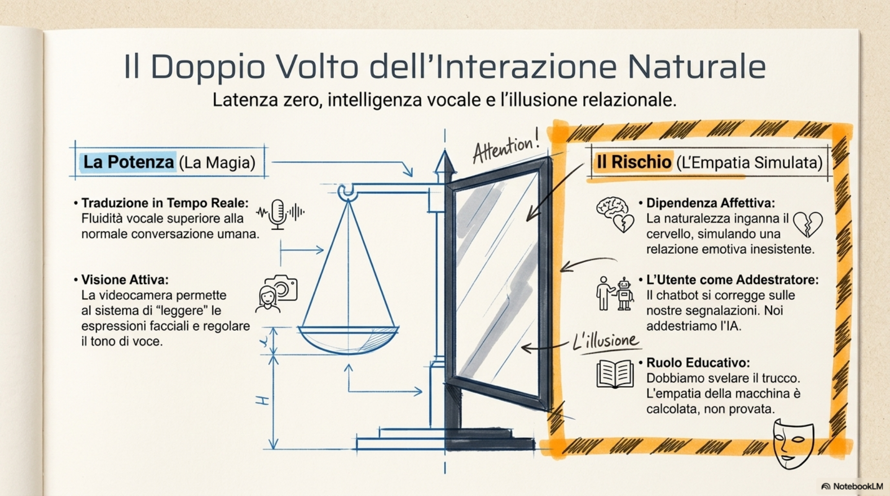
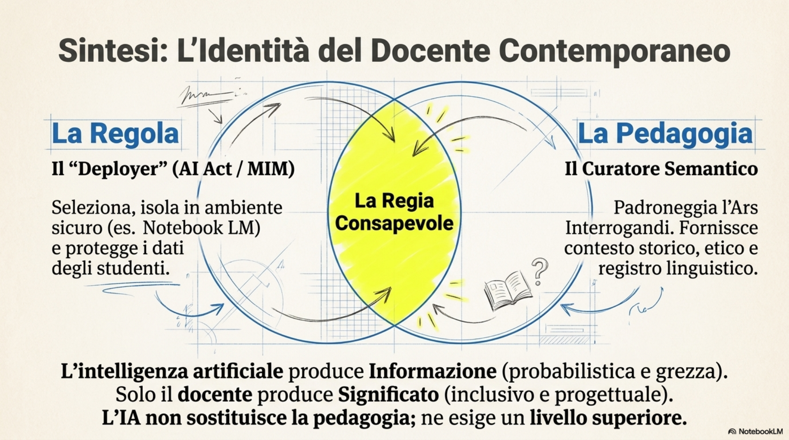
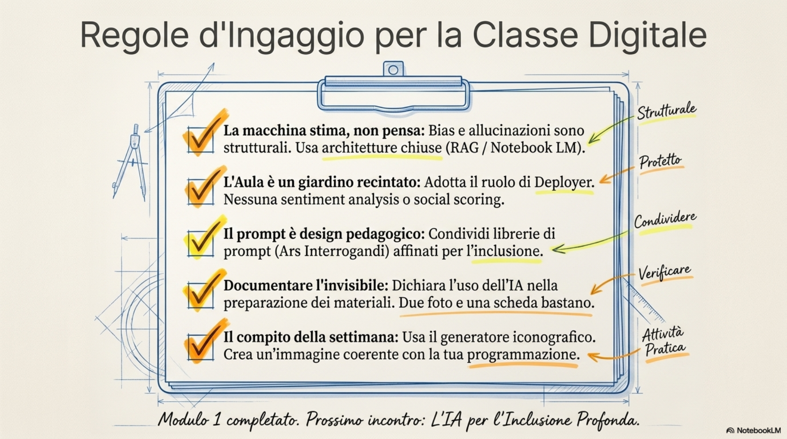
Vedere · Video tutorial¶
Video tutorial di approfondimento. Guardali in ordine o salta a quello che ti interessa.
Leggere · Dispensa¶
Corso di formazione
IA come co-pilota nella progettazione della didattica inclusiva
Modulo 1 - L'IA nel contesto educativo
Dispensa didattica
Data della sessione: 10 aprile 2026
Formatore: Antonio Scaramuzzino
Rete di istituti comprensivi - Calabria
Indice¶
1. Obiettivi formativi del modulo
2. Inquadramento concettuale
2.1 Dalla fruizione passiva alla regia consapevole
2.2 L'IA come disciplina: oltre la sola IA generativa
2.3 Il funzionamento probabilistico dei modelli linguistici
2.4 Bias, allucinazioni e responsabilità del docente
2.5 I framework di riferimento: Linee guida MIM, AI Act, DigComp 3.0, UNESCO
2.6 L'Ars interrogandi e la pratica del prompting
2.7 Il capitale semantico: dare significato all'informazione
3. Esempi e casi presentati a lezione
4. Strumenti e risorse citati
5. Domande dal gruppo
6. Sintesi e punti di attenzione
7. Glossario
8. Per approfondire
1. Obiettivi formativi del modulo¶
Il primo modulo introduce l'intelligenza artificiale come oggetto e come strumento del lavoro didattico. Al termine dell'incontro il docente è in grado di:
-
riconoscere l'IA come una disciplina ampia, di cui l'IA generativa rappresenta solo una porzione, e collocarla all'interno del quadro normativo italiano ed europeo (Linee guida MIM 2025, AI Act, GDPR, DigComp 3.0, framework UNESCO);
-
comprendere il funzionamento probabilistico dei modelli linguistici di grandi dimensioni e gli effetti che questo meccanismo ha su bias, allucinazioni e qualità delle risposte;
-
utilizzare in modo critico almeno uno strumento di lavoro con le fonti (Notebook LM) come quaderno digitale per analizzare documenti, generare mappe mentali, infografiche, presentazioni e quiz a partire da materiali scelti dal docente;
-
impostare prompt strutturati e personalizzazioni della chat per ottenere output coerenti con l'età degli alunni e con il contesto educativo di riferimento;
-
individuare, nell'ottica della didattica inclusiva, ambiti concreti di sperimentazione in classe (BES, DSA, scaffolding, semplificazione, mappe concettuali) nel rispetto del principio di controllo umano e di trasparenza nella dichiarazione dell'uso dell'IA.
2. Inquadramento concettuale¶
2.1 Dalla fruizione passiva alla regia consapevole¶
Il salto culturale richiesto al docente non riguarda il sapere usare un nuovo software, ma il passaggio da fruitore di tecnologia a regista di esperienze educative. Per anni la scuola ha utilizzato il digitale come strumento, fino all'accelerazione obbligata della DAD, periodo nel quale la tecnologia è stata vissuta come necessità più che come scelta progettuale. La stagione attuale, segnata dall'irruzione dei sistemi generativi, chiede invece un atto di progettazione esplicita: è il docente che decide quale apprendimento costruire, e l'IA diventa uno dei materiali a disposizione.
La metafora del co-pilota, da cui il titolo del corso, esprime esattamente questa ambiguità. Come nell'auto-scuola, l'istruttore ha sempre un freno: la guida può essere autonoma, ma qualcuno controlla. Non è ancora chiaro se siamo noi a co-pilotare l'intelligenza artificiale o se siamo noi a farci affiancare da un co-pilota artificiale; in entrambe le letture, però, l'intenzionalità didattica resta in capo all'insegnante.
2.2 L'IA come disciplina: oltre la sola IA generativa¶
L'intelligenza artificiale non nasce con ChatGPT. Già alla fine degli anni Novanta esistevano ambienti di sperimentazione con agenti intelligenti e teorie del caos. Ciò che ha cambiato lo scenario negli ultimi tre anni è la disponibilità di una potenza di calcolo prima inimmaginabile, che ha reso possibile l'addestramento di modelli su enormi quantità di dati.
Trattare l'IA come una disciplina significa accettare che essa interseca più saperi: matematica, lingua, tecnologia, filosofia, etica, religione. Non a caso, in Italia, tra i responsabili dei comitati scientifici sull'IA figurano studiosi che si occupano di etica della tecnologia. Il framework AI4K12, sviluppato negli Stati Uniti, propone cinque grandi idee che organizzano la disciplina: percezione, rappresentazione e ragionamento, apprendimento automatico, interazione naturale, impatto sociale. È un buon punto di partenza per impostare attività anche nella scuola dell'infanzia e nella primaria, perché permette di mostrare ai bambini dove l'IA è già presente nella vita quotidiana (riconoscimento delle immagini, guida assistita, traduzione automatica, raccomandazioni dei contenuti) prima ancora di farli interagire con un chatbot.
2.3 Il funzionamento probabilistico dei modelli linguistici¶
Per comprendere benefici e limiti dell'IA generativa è utile chiarire come questi sistemi producano testo. Quando si scrive in un normale word processor si aggiunge una parola dopo l'altra senza che ciò richieda di ricalcolare il documento. I modelli linguistici, al contrario, lavorano su grandi banche dati indicizzate per vicinanza semantica: ogni unità di testo (token) viene posizionata in funzione di quelle che la precedono e la seguono. Per questo motivo, ad ogni richiesta, il sistema ricalcola l'intero contesto. Si parla quindi di tecnologia probabilistica: il modello non pensa e non calcola in senso stretto, ma stima quale parola è più probabile in una determinata posizione.
Da qui derivano due conseguenze pratiche. La prima è lo spreco computazionale: ogni interazione consuma risorse, e questo spiega perché un'automazione spinta resti, per ora, parzialmente frenata dai costi. La seconda conseguenza riguarda la qualità degli output, che dipende dai dati di addestramento e dalla lingua dominante nelle fonti. Nei primi mesi di ChatGPT, ad esempio, una richiesta di poesia in rima italiana restituiva versi che in rima non erano; tradotti in inglese, gli stessi versi rimavano, perché la base di addestramento era prevalentemente anglosassone.
2.4 Bias, allucinazioni e responsabilità del docente¶
Il termine bias indica i pregiudizi presenti negli enormi insiemi di dati su cui i modelli sono addestrati. Se i dati riflettono una visione culturale, geografica o linguistica parziale, anche le risposte tenderanno a riprodurla. Le allucinazioni, invece, sono le risposte plausibili ma non corrispondenti a realtà che il modello produce quando non dispone di informazioni sufficienti: è uno dei rischi più citati nelle linee guida.
La responsabilità professionale del docente sta nel definire il perimetro entro cui questi strumenti possono essere usati: in quale contesto educativo, con quali alunni, per quale obiettivo didattico. Quattro verbi orientano questo lavoro: comprendere, progettare, sperimentare e valutare. Comprendere significa riconoscere opportunità e rischi per inclusione e personalizzazione; progettare significa costruire piccole attività interattive; sperimentare significa provare l'IA come assistente cognitivo; valutare significa documentare l'esito di ciò che si è fatto, condividerlo, sottoporlo a revisione tra pari.
2.5 I framework di riferimento¶
Il quadro di riferimento per la scuola italiana è oggi articolato e in rapida evoluzione. Le Linee guida del Ministero (Decreto Ministeriale del 9 agosto 2025) fissano i principi: centralità della persona e del ruolo umano, equità e inclusione, innovazione etica e responsabile, sostenibilità sociale e ambientale, tutela dei diritti fondamentali, sicurezza dei sistemi. A livello europeo opera l'AI Act, mentre il GDPR continua a regolare la protezione dei dati personali, con particolare attenzione alla tutela dei minori.
Il 31 marzo 2026 è stato pubblicato in italiano il nuovo DigComp 3.0. La scelta operata in questa edizione è significativa: l'intelligenza artificiale non è confinata in una nuova area specifica, ma è inserita in modo trasversale all'interno delle cinque aree di competenza digitale (ricerca e valutazione delle informazioni, comunicazione e collaborazione, creazione di contenuti digitali, sicurezza-benessere-uso responsabile, identificazione e risoluzione dei problemi). L'IA viene presentata in alcuni casi in modo esplicito, in altri in modo implicito: una competenza come alfabetizzazione informativa, ad esempio, contiene oggi l'IA al suo interno anche quando non è nominata, perché i motori di ricerca che usiamo ne fanno largo uso. Compito del docente diventa quindi mostrare ai ragazzi dove l'IA agisce, non solo come si usa.
A questi documenti si aggiungono i framework dell'UNESCO sull'AI literacy e l'atto di indirizzo nazionale che definisce gli adempimenti delle scuole (comprensione del quadro normativo, pianificazione del PIA - Piano di Istituto per l'IA, adozione di soluzioni didattiche con approccio antropocentrico). Il calendario fissa nel marzo 2026 un primo traguardo formale; il periodo aprile-giugno 2026 è indicato come fase di adozione e sperimentazione, e questo corso si colloca esattamente all'interno di quella finestra.
Tra le pratiche vietate ai sensi del quadro europeo e ribadite dalle linee guida nazionali rientrano: la sentiment analysis applicata agli studenti, il riconoscimento delle emozioni, le tecniche subliminali, la classificazione sociale (social scoring) e la categorizzazione biometrica. La scuola, all'interno della filiera dell'IA, assume il ruolo di deployer: non sviluppa i sistemi, ma sceglie, adatta e utilizza strumenti già esistenti all'interno di un proprio ambito di applicazione educativo.
2.6 L'Ars interrogandi e la pratica del prompting¶
Il termine prompt nasce nei linguaggi di programmazione: era la riga di comando con cui, negli anni Ottanta, si dialogava con il sistema operativo (chi ricorda l'MS-DOS lo sa bene). Oggi quella stessa modalità di interazione, scrivere righe di testo per chiedere a una macchina di fare qualcosa, torna in una forma più naturale: la chat. La chat è un'interfaccia familiare ai ragazzi, abituati a scambiarsi messaggi; questo non significa però che essi sappiano interrogare in modo efficace un sistema di intelligenza artificiale generativa.
L'Ars interrogandi, l'arte di porre domande, è una tradizione pedagogica antica che ha trovato in Pier Cesare Rivoltella uno dei suoi sostenitori più noti nel contesto italiano. Applicata al prompting, ricorda al docente che la qualità della risposta dipende dalla chiarezza dell'intenzione pedagogica espressa nella richiesta. Un prompt non è un'istruzione tecnica, ma un atto progettuale: definisce destinatari, registro linguistico, vincoli, formato dell'output. Per questo conviene costruire nel tempo una libreria di prompt riutilizzabili, da affinare e condividere tra colleghi.
2.7 Il capitale semantico: dare significato all'informazione¶
Il filosofo dell'informazione Luciano Floridi ha introdotto la nozione di capitale semantico per indicare la capacità di trasformare informazione grezza in significato. In un ecosistema in cui convivono persone e agenti artificiali, il docente non è soltanto produttore di contenuti, ma designer, curatore, interprete. Questo sposta l'attenzione dalla quantità di output alla loro qualità semantica: dare un significato preciso a una richiesta, scegliere uno stile, esplicitare un contesto storico-artistico o pedagogico.
Un esempio operativo aiuta a fissare il concetto. Generare un'immagine non significa premere un pulsante: significa scegliere soggetto, tema, periodo, tecnica, palette di colori, effetto di luce. Modificare un solo parametro, come passare da acquerello ad arazzo, o da colori saturi a colori desaturati, restituisce un'immagine diversa pur mantenendo l'iconografia di partenza. Lavorare con i ragazzi su queste variazioni significa fare educazione visiva e, al contempo, educazione all'uso consapevole degli strumenti generativi.
3. Esempi e casi presentati a lezione¶
Caso 1 - Il libro di tecnologia come interlocutore¶
Una delle bacheche Padlet condivise raccoglie circa settanta libri di tecnologia in formato digitale, caricati come fonti all'interno di Notebook LM. Il libro non è più un oggetto passivo da consultare: diventa un interlocutore con cui chattare. Chiedendo Mi spieghi l'alimentazione, il sistema esegue uno scanning delle fonti, restituisce una sintesi e cita i passaggi specifici, riportando il lettore al paragrafo originale. È un esempio di sistema RAG (Retrieval Augmented Generation): le risposte sono ancorate ai documenti forniti, riducendo drasticamente il rischio di allucinazione.
Caso 2 - La favola del lupo e l'agnello in chiave inclusiva¶
Per mostrare come adattare il registro linguistico al destinatario, si carica come fonte in Notebook LM una versione classica della favola Il lupo e l'agnello. Una prima richiesta produce un'analisi accademica: personaggi, ambientazione, struttura narrativa, morale sociale. Personalizzando la chat con l'istruzione utilizza un linguaggio adatto a bambini della scuola dell'infanzia, la stessa fonte restituisce una versione fruibile dai più piccoli. Da quel momento l'intera sessione di lavoro eredita la personalizzazione: anche i quiz generati assumono lo stesso registro, con feedback adatti all'età.
Caso 3 - Dall'analisi al quiz: un quaderno digitale per BES e DSA¶
A partire dalla stessa favola si genera, con un click, una mappa mentale che ricostruisce personaggi, ambientazione, pretesti del lupo, evoluzione del conflitto e morale. Da li si produce un'infografica con uno stile coerente (la guida visiva richiamata è quella delle sketch note disegnate a mano) e una serie di quiz a risposta multipla. La novità didattica non sta nel quiz in sé, ma nella funzione Spiega: per ogni risposta errata il sistema torna alla fonte e fornisce un feedback che aiuta lo studente a comprendere l'errore. In un'ottica di didattica inclusiva, un quaderno di questo tipo mette a disposizione di un alunno BES o DSA mappa concettuale, semplificazione, immagini e verifica autoformativa.
Caso 4 - Le linee guida ministeriali analizzate con Notebook LM¶
Il decreto ministeriale del 9 agosto 2025 viene caricato come fonte insieme a documenti UNESCO, AI Act e DigComp 3.0. Su questa base, in pochi secondi, si ottengono una mappa mentale dei principi di riferimento, una presentazione con timeline degli adempimenti e alcune infografiche di sintesi. Cliccando sul concetto innovazione etica e responsabile, il sistema apre il paragrafo corrispondente delle linee guida e ne propone una spiegazione contestualizzata. La lezione non è più una sequenza statica di slide, ma una navigazione dinamica del documento.
Caso 5 - Il foglio di calcolo come generatore di prompt iconografici¶
Per insegnare in modo operativo il concetto di capitale semantico viene mostrato un foglio Google costruito per un laboratorio dedicato all'educazione visiva. Il foglio incrocia quattro variabili semantiche: tema, periodo o stile artistico, tecnica, parametri di luce e colore, e produce automaticamente il prompt da incollare in un generatore di immagini. Modificando un solo parametro (per esempio da acquerello a doodle a contorni, lo stile della maestra Maria) si ottiene una trasformazione coerente dell'iconografia. L'attività è replicabile anche nella scuola primaria per lavorare su tecniche pittoriche e materiali.
Caso 6 - Vibe coding: il gregoriano e i neomelodici¶
In un corso precedente un docente di musica, lavorando con alunni del napoletano poco familiari con il canto gregoriano, ha posto un problema didattico chiaro: come incuriosire i ragazzi partendo dal loro repertorio quotidiano, fatto di musica neomelodica. La risposta, costruita in poche ore di vibe coding (programmazione assistita da IA generativa), è stata una piccola applicazione che riceve in input un testo neomelodico e ne restituisce una resa in stile gregoriano. L'esempio mostra come l'IA generativa, integrata con il coding, permetta oggi di costruire simulazioni e micro-app didattiche su misura, partendo da un'esigenza reale.
Caso 7 - Interazione naturale e tema dell'empatia simulata¶
L'interazione vocale con ChatGPT e Gemini ha raggiunto livelli di naturalezza tali da rendere quasi impercettibile la latenza. La traduzione in tempo reale dimostrata in occasione del lancio di GPT-4o è un esempio: italiano e inglese si alternano con fluidità superiore alla normale conversazione umana. Sui modelli più recenti, attivando la videocamera del telefono, il sistema riconosce anche l'espressione del volto e regola di conseguenza il tono della risposta. È una potenza che va presentata ai ragazzi mostrandone anche il rovescio: la facilità con cui un sistema può simulare empatia genera rischi di dipendenza cognitiva e affettiva. Un episodio raccontato a lezione, relativo a una conversazione tra uno storico del servizio civile e un agente conversazionale, esemplifica anche il fenomeno inverso: il chatbot apprende dall'utente, confermando che noi stessi siamo, di fatto, addestratori di IA.
Caso 8 - Black Mirror, episodio Caduta libera: il social scoring¶
Per affrontare il tema dell'impatto sociale dei sistemi basati sui dati viene proposta la visione dell'episodio Caduta libera (Nosedive) della serie Black Mirror. Nel mondo rappresentato, ogni persona riceve da chiunque incontri un punteggio da una a cinque stelle, e quel punteggio determina l'accesso a voli, case, cure mediche. La protagonista, Lacie, in viaggio verso il matrimonio di un'amica per consolidare la propria reputazione, incappa in una serie di episodi che le fanno perdere stelle e, con esse, ogni privilegio. L'episodio mette in scena con efficacia il rischio del social scoring, pratica oggi esplicitamente vietata dalle linee guida e dall'AI Act, e permette di parlare con i ragazzi di bias e di chi controlla i dati. È un materiale utile anche con la scuola secondaria di primo grado, in collaborazione con educazione civica.
4. Strumenti e risorse citati¶
Gli strumenti presentati durante l'incontro sono stati selezionati in funzione delle Linee guida ministeriali e della loro spendibilità immediata nella pratica docente. Per ciascuno si indica la funzione didattica principale.
Notebook LM. Quaderno digitale di Google. Permette di caricare fino a 50 fonti (200 nella versione Pro) in formato PDF, Google Docs, video YouTube, siti web o testo incollato, e di interrogarle in chat con citazione puntuale del paragrafo. Genera mappe mentali, infografiche, presentazioni, overview audio e video, quiz e flashcard. È lo strumento centrale del modulo per la sua natura RAG.
Padlet. Bacheca digitale usata come scaffale didattico: contiene presentazioni, link, file, video. Sostituisce la cartella su chiavetta o su Drive e si presta a essere condivisa con la classe e con i colleghi della rete. La visualizzazione orizzontale è una funzionalità recente.
Gemini. Assistente generativo di Google. Integra il motore Nano Banana per la generazione di immagini e mantiene il contesto tra una richiesta e l'altra, consentendo serie iconografiche coerenti. È utile per generare quiz, immagini e contenuti che si vogliono condividere come link autonomo, senza esporre l'intero notebook.
ChatGPT (versione 5). Modello di OpenAI usato a lezione per mostrare la traduzione vocale in tempo reale e la modalità di visione tramite videocamera del cellulare.
Gamma. Strumento di generazione di presentazioni a partire da un brief testuale. Usato per ricomporre la presentazione del corso.
Canva. Editor grafico cloud, gratuito nella versione base; utilizzato per rifinire le presentazioni generate dall'IA.
AI4K12 - Cinque grandi idee. Framework americano (fascia K12, dai 4 ai 12 anni di scolarizzazione) che organizza l'IA come disciplina lungo cinque assi: percezione, rappresentazione e ragionamento, apprendimento, interazione naturale, impatto sociale.
DigComp 3.0 (marzo 2026). Quadro europeo delle competenze digitali, rilasciato in italiano il 31 marzo 2026. Inserisce l'IA in modo trasversale nelle cinque aree di competenza.
Linee guida del MIM (DM 9 agosto 2025). Riferimento normativo principale per la scuola italiana, definisce principi, pratiche vietate, ruolo della scuola come deployer.
UNESCO - AI literacy. Insieme di framework e linee guida per l'alfabetizzazione all'IA, parte del quadro internazionale di riferimento.
Code.org. Piattaforma storica per il coding nella scuola; ha rilanciato l'Ora del Codice in chiave IA con percorsi sull'apprendimento automatico anche per la scuola primaria.
Foglio Google generatore di prompt iconografici. Strumento didattico personale condiviso con i corsisti, organizza la produzione di immagini per soggetto, stile, tecnica, luce, colore.
5. Domande dal gruppo¶
Durante la sessione sono emerse alcune domande significative dei partecipanti. Vengono qui riportate in forma anonima, insieme alle risposte fornite.
|
Domanda dal gruppo Una docente chiede di ripetere il passaggio relativo al prompt che imposta lo stile delle infografiche. Risposta. Il prompt utilizzato a lezione, ricavato da un tutorial pubblico, descrive uno stile sketch note: il sistema deve generare l'infografica come se fosse un appunto preso a mano, con tratti netti, icone semplificate e annotazioni testuali brevi. Salvando il prompt in una libreria personale (per esempio in un documento o in Padlet) è possibile riutilizzarlo in ogni nuovo notebook, applicando uno stile grafico coerente a tutti i materiali prodotti. |
|
Domanda dal gruppo Una docente di scuola dell'infanzia chiede come avvicinarsi a Notebook LM senza essere abituati a strumenti di questo tipo. Risposta. Conviene partire dalla propria programmazione: si crea un nuovo quaderno, gli si dà un nome tematico (per esempio Le emozioni o L'autunno), si caricano alcune fonti già usate in classe (testi, immagini, video YouTube). Da li si chiede al sistema una mappa mentale e si personalizza la chat con un'istruzione semplice: usa un linguaggio adatto a bambini di quattro o cinque anni. Da quel punto in poi ogni risposta, ogni quiz, ogni infografica eredita quel registro. Gli spunti specifici per l'infanzia saranno approfonditi nel modulo dedicato all'inclusione. |
|
Domanda dal gruppo Una docente chiede se Notebook LM contenga già delle fonti predefinite. Risposta. No. Il quaderno nasce vuoto: la metafora dello scaffale è calzante, è il docente a riempirlo. Senza fonti il sistema risponde comunque ricorrendo a conoscenze generali, ma perde la sua caratteristica distintiva, ossia il fatto di ridurre le allucinazioni rispondendo soltanto sulla base dei documenti caricati. Notebook LM è nato proprio come strumento per dialogare con i propri libri, prima ancora di essere acquisito da Google. |
|
Domanda dal gruppo Una docente chiede se sia possibile condividere con la classe soltanto il quiz prodotto, senza dare accesso all'intero notebook. Risposta. All'interno di Notebook LM la condivisione è a livello di quaderno: chi riceve il link accede all'intero ambiente in modalità di sola lettura. Se si desidera distribuire solo il quiz, conviene farselo generare in formato testuale dal notebook e poi ricostruirlo in Gemini, oppure costruire una piccola app dedicata con tecniche di vibe coding (argomento che sarà affrontato nei moduli successivi). |
|
Domanda dal gruppo Una docente segnala di aver esaurito la quota giornaliera di Notebook LM mentre produceva infografiche e chiede come fare. Risposta. La versione gratuita di Notebook LM pone limiti giornalieri sulle infografiche e sulle presentazioni (indicativamente tre al giorno per ciascuna tipologia). Le alternative praticabili sono tre: usare più account Gmail personali per distribuire il lavoro, sottoscrivere temporaneamente la versione Pro nel periodo in cui si stanno producendo molti materiali, oppure suddividere la produzione tra più colleghi condividendo poi i risultati nella bacheca della rete. |
|
Domanda dal gruppo Una docente chiede se Notebook LM sia attivo negli account istituzionali di tutte le scuole della rete. Risposta. Lo stato di attivazione varia da scuola a scuola, in funzione delle scelte fatte sulla Workspace di istituto e in attesa che ogni scuola completi il proprio regolamento sull'IA. Nella fase attuale si suggerisce di esercitarsi anche con un account Gmail personale; l'uso con classe e su account istituzionale verrà progressivamente abilitato una volta definito il regolamento e i casi d'uso ammessi. |
|
Domanda dal gruppo Una dirigente richiama il fatto che le scuole hanno già adottato un regolamento sull'IA e ricorda che spetta all'istituto decidere quali strumenti possano essere usati e con quali cautele, specie sulla valutazione e nei confronti di alunni minorenni. Risposta. L'osservazione viene pienamente accolta. La produzione di contenuti da parte del docente (slide, PDF, schede) è già di fatto un terreno in cui l'IA può essere usata con trasparenza, dichiarando lo strumento utilizzato. L'uso con la classe richiede invece un secondo passaggio: definire casi d'uso, coinvolgere le famiglie, distinguere fra ciò che i docenti possono adottare a supporto della progettazione e ciò che può essere proposto direttamente agli alunni. La sperimentazione del corso si colloca proprio dentro questo perimetro di adozione formale e progressiva. |
|
Domanda dal gruppo Un docente condivide di aver utilizzato Notebook LM per la propria formazione personale, semplificando ad esempio podcast lunghi del professor Barbero, e chiede se questo uso sia coerente con il corso. Risposta. Sì, l'uso per la formazione personale è parte legittima del percorso: è uno dei modi più efficaci per impadronirsi dello strumento. La semplificazione automatica di un podcast lungo o di un testo universitario, con generazione di sintesi, mappe e quiz, è esattamente il meccanismo che, una volta interiorizzato, può essere riportato nella preparazione delle lezioni e nei materiali per gli alunni con BES e DSA. |
|
Domanda dal gruppo Una docente di sostegno racconta di usare già Notebook LM per produrre semplificazioni e mappe a partire dai testi adottati, calibrando il prompt sulla disabilità specifica dell'alunno. Risposta. L'esperienza viene segnalata come buona pratica esemplare. La forza dello strumento, in ambito sostegno, sta proprio nella possibilità di indirizzare prompt e stile grafico sulla problematica specifica: scegliere il tipo di mappa, il livello di astrazione, la quantità di testo per immagine, eventuali pittogrammi. È una linea di lavoro che sarà approfondita nel modulo dedicato all'inclusione, anche in chiave Universal Design for Learning. |
6. Sintesi e punti di attenzione¶
Il primo modulo si chiude su alcuni punti che il gruppo è invitato a tenere presenti nelle settimane successive, prima dell'incontro dedicato all'inclusione.
L'IA generativa è uno strumento probabilistico, non un oracolo. I bias e le allucinazioni non sono guasti occasionali ma caratteristiche strutturali; la qualità dell'output dipende dalle fonti, dalla lingua di addestramento e dal prompt.
Il docente è un deployer, non uno sviluppatore. Spetta alla scuola scegliere e adattare strumenti già esistenti, definire un perimetro d'uso e dichiarare la presenza dell'IA nei materiali prodotti.
Le linee guida vanno conosciute, non temute. Notebook LM permette di lavorarci sopra in pochi minuti: mappe, infografiche, presentazioni e quiz a partire dal testo normativo riducono la distanza tra la cornice istituzionale e la pratica quotidiana.
Il prompt è un atto progettuale, non tecnico. L'Ars interrogandi è una competenza pedagogica: chi sa porre domande in classe, saprà porle anche all'IA. Costruire una libreria di prompt riutilizzabili è la prima forma di documentazione professionale richiesta dal corso.
Documentare e condividere sono parte integrante dell'attività. Le linee guida richiedono di documentare le sperimentazioni. Anche due o tre fotografie e una scheda sintetica costituiscono documentazione utile: l'obiettivo non è pubblicare, ma rendere replicabile ciò che funziona.
Il rischio del divario digitale resta centrale. Tra gli studenti che usano già questi strumenti in autonomia e quelli che non li conoscono, si apre un divario culturale che la scuola è chiamata a ridurre, anche dialogando con le famiglie.
7. Glossario¶
IA generativa. Famiglia di sistemi di intelligenza artificiale in grado di produrre testo, immagini, audio o video originali a partire da una richiesta in linguaggio naturale. Rappresenta una porzione, non l'intera disciplina dell'IA.
LLM (Large Language Model). Modello linguistico di grandi dimensioni addestrato su enormi quantità di testo. Predice la parola più probabile in funzione del contesto. Esempi: GPT, Gemini, Claude.
Prompt. Istruzione testuale fornita al modello per ottenere un output. Il termine deriva dai primi sistemi operativi a riga di comando.
Token. Unità minima di testo (parola, parte di parola, simbolo) con cui i modelli linguistici lavorano. Ogni interazione viene misurata e tariffata in token.
Bias. Pregiudizio sistematico contenuto nei dati di addestramento di un sistema di IA, che si riflette negli output. Può essere culturale, linguistico, di genere, geografico.
Allucinazione. Risposta plausibile ma non corrispondente a realtà prodotta da un modello generativo. Tipica delle situazioni in cui il modello non ha informazioni sufficienti.
RAG (Retrieval Augmented Generation). Architettura che combina un modello generativo con un archivio di documenti scelti dall'utente. Le risposte vengono costruite a partire da quei documenti e ne citano i passaggi, riducendo le allucinazioni. Notebook LM ne è un esempio.
Notebook LM. Quaderno digitale di Google basato su RAG. Consente di caricare fonti e di interrogarle generando mappe, infografiche, presentazioni, quiz, flashcard e overview audio o video.
Deployer. Nel quadro dell'AI Act, soggetto che sceglie, adatta e utilizza sistemi di IA nel proprio ambito di applicazione. La scuola è un deployer, non uno sviluppatore.
AI Act. Regolamento europeo sull'intelligenza artificiale, classifica i sistemi per livello di rischio e definisce pratiche vietate (social scoring, riconoscimento delle emozioni, tecniche subliminali, categorizzazione biometrica).
GDPR. Regolamento generale europeo sulla protezione dei dati personali. Si applica anche all'uso scolastico dei sistemi di IA, con attenzione particolare ai minori.
DigComp 3.0. Quadro europeo delle competenze digitali per i cittadini, edizione 2026. Integra l'IA in modo trasversale nelle cinque aree di competenza.
Linee guida MIM. Decreto Ministeriale del 9 agosto 2025 che fissa i principi e le pratiche per l'introduzione dell'IA nella scuola italiana.
PIA - Piano di Istituto per l'IA. Documento di programmazione che ogni scuola è chiamata a redigere per definire strumenti, casi d'uso, ruoli e regole interne.
Sentiment analysis. Tecnica di analisi automatica del tono emotivo di un testo. Vietata in ambito scolastico quando applicata agli studenti.
Social scoring. Pratica di assegnare a una persona un punteggio sociale basato sul comportamento. Vietata in Europa dall'AI Act.
Ars interrogandi. Tradizione pedagogica dell'arte di porre domande. Applicata oggi alla costruzione dei prompt come atto progettuale, non solo tecnico.
Capitale semantico. Concetto di Luciano Floridi che indica la capacità di trasformare informazione grezza in significato attraverso un atto curatoriale e interpretativo.
Vibe coding. Pratica di sviluppo software assistito da IA generativa, in cui si descrive a parole l'app desiderata e il modello produce il codice.
Sketch note. Stile di rappresentazione visiva che combina testo, icone e tratti grafici come in un appunto disegnato a mano. Usato a lezione come stile per le infografiche.
Universal Design for Learning (UDL). Approccio progettuale che mira a rendere i materiali didattici accessibili al maggior numero possibile di studenti, evitando complessità superflue.
8. Per approfondire¶
I riferimenti elencati sono stati citati durante l'incontro e sono utili per consolidare i concetti del modulo prima della seconda sessione.
Decreto Ministeriale del 9 agosto 2025 - Linee guida per l'introduzione dell'IA nella scuola. Documento normativo di base. Si consiglia di analizzarlo all'interno di Notebook LM, partendo dalla generazione di una mappa mentale dei principi di riferimento.
DigComp 3.0 - versione italiana, marzo 2026. Quadro europeo delle competenze digitali, da leggere prestando attenzione agli aggiornamenti che introducono l'IA in modo trasversale, anche nell'area sicurezza-benessere-uso responsabile.
AI4K12 - The Five Big Ideas in AI. Framework per organizzare l'IA come disciplina nella fascia 4-12 (riferito al sistema K12 americano), articolato in percezione, rappresentazione e ragionamento, apprendimento, interazione naturale, impatto sociale.
MOOC dell'Equipe Formativa Territoriale sul DigComp. Percorso di formazione gratuito che propone schede didattiche operative su tutto il DigComp. Il link sarà condiviso nella bacheca Padlet del corso.
I-School - corso aggiornato sulle linee guida. Corso in riedizione promosso dall'Equipe Formativa, dedicato in particolare a chi fa parte dei team scuola sull'IA.
Black Mirror, episodio Caduta libera (Nosedive). Risorsa narrativa utile per discutere con i ragazzi i rischi del social scoring e l'influenza dei bias nei sistemi di valutazione automatica.
Luciano Floridi, scritti sull'etica dell'informazione e sul capitale semantico. Riferimento teorico per il passaggio da fruitori a curatori dell'informazione in un ecosistema che include agenti artificiali.
Pier Cesare Rivoltella e gli studi sull'Ars interrogandi. Riferimenti per costruire una pratica didattica del prompting fondata sull'arte di porre domande.
Etan Mollick - Co-Intelligence. Lavori sul co-design tra docente e IA, citati come riferimento per i laboratori previsti nei moduli successivi.
Bacheche Padlet del corso e dei corsi precedenti del formatore. Raccolgono materiali, presentazioni, esempi: Iart, Insegnare tecnologia, Dalla semantica alla biblioteca transmediale, Vibe coding inclusivo. Saranno richiamate nel padlet ufficiale del corso.
Compito per la settimana. Si invita ogni partecipante a sperimentare il foglio Google generatore di prompt iconografici condiviso a lezione, producendo almeno un'immagine coerente con un argomento della propria programmazione e pubblicandola, con il prompt utilizzato, nella bacheca Padlet del corso. L'attività costituisce il primo esercizio di controllo semantico sugli output di un sistema generativo e prepara il lavoro sull'inclusione previsto nel secondo modulo.
Verificare · Quiz¶
Il quiz è in una pagina separata per evitare che si possa cercare la risposta nella dispensa (Ctrl+F).
Soglia di superamento: 60% di risposte corrette. Puoi riprovare se non passi al primo tentativo.
Ripassare · Flashcard¶
Clicca sulla carta per scoprire la definizione. Usa le frecce per scorrere.